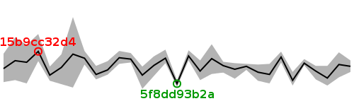

| Revision | Average | Min | Max | Size (bytes) | Benchmarked on | All times |
| bd64a1b794 | 15.52 | 15.44 | 15.61 | 99657 | Tue Aug 7 23:58:29 2012 | All times |
| f62fd06b79 | 15.55 | 15.36 | 15.73 | 99737 | Wed Aug 8 00:35:40 2012 | All times |
| 5fd2fc8e32 | 15.35 | 15.24 | 15.53 | 99657 | Tue Aug 7 22:43:42 2012 | All times |
| b6b26f5afd | 15.45 | 15.33 | 15.53 | 99657 | Tue Aug 7 23:21:09 2012 | All times |
| b52990befb | 15.57 | 15.54 | 15.63 | 99737 | Tue Aug 7 20:37:24 2012 | All times |
| 225b47efbd | 15.32 | 15.24 | 15.44 | 99737 | Tue Aug 7 21:14:41 2012 | All times |
| 3eea24e04a | 15.66 | 15.58 | 15.74 | 99657 | Tue Aug 7 21:52:00 2012 | All times |
| 876615e258 | 15.40 | 15.27 | 15.56 | 99737 | Tue Aug 7 09:37:21 2012 | All times |
| 43955e8062 | 15.44 | 15.31 | 15.55 | 99813 | Tue Aug 7 05:55:21 2012 | All times |
| d7b4d238af | 15.52 | 15.47 | 15.56 | 99813 | Tue Aug 7 03:39:51 2012 | All times |
| 71bb64df71 | 15.48 | 15.34 | 15.57 | 99813 | Tue Aug 7 04:17:17 2012 | All times |
| 9c9e2c6b1d | 15.53 | 15.43 | 15.59 | 99253 | Tue Aug 7 02:16:04 2012 | All times |
| fa7ff84d47 | 15.64 | 15.41 | 15.85 | 98882 | Tue Aug 7 00:21:44 2012 | All times |
| da9d9a6660 | 15.45 | 15.32 | 15.61 | 98882 | Mon Aug 6 17:44:26 2012 | All times |
| 050eba485a | 15.68 | 15.61 | 15.76 | 98882 | Mon Aug 6 07:02:03 2012 | All times |
| 5f8dd93b2a | 15.27 | 15.22 | 15.32 | 98823 | Mon Aug 6 07:40:13 2012 | All times |
| d77b4c9404 | 15.64 | 15.57 | 15.77 | 98743 | Mon Aug 6 02:04:52 2012 | All times |
| 67a79d5510 | 15.54 | 15.38 | 15.67 | 98743 | Mon Aug 6 02:41:21 2012 | All times |
| 6d56f4429e | 15.39 | 15.19 | 15.52 | 98743 | Mon Aug 6 18:21:20 2012 | All times |
| 4c48da17fe | 15.63 | 15.58 | 15.72 | 98823 | Mon Aug 6 01:27:29 2012 | All times |
| e3d59a330e | 15.65 | 15.56 | 15.75 | 98743 | Mon Aug 6 03:18:32 2012 | All times |
| c289daf4db | 15.47 | 15.40 | 15.60 | 98743 | Mon Aug 6 18:58:23 2012 | All times |
| a29fd0668e | 15.40 | 15.33 | 15.53 | 98823 | Mon Aug 6 04:32:53 2012 | All times |
| 07cd608e26 | 15.64 | 15.55 | 15.75 | 98743 | Mon Aug 6 03:55:23 2012 | All times |
| bfdb8242d9 | 15.70 | 15.21 | 16.25 | 98823 | Sat Aug 4 10:42:03 2012 | All times |
| 743d05c89c | 15.51 | 15.26 | 15.70 | 98823 | Sat Aug 4 09:08:17 2012 | All times |
| 7caeaa0b05 | 15.39 | 15.31 | 15.52 | 98823 | Sat Aug 4 01:48:21 2012 | All times |
| 15b9cc32d4 | 15.74 | 15.60 | 16.00 | 98823 | Sat Aug 4 09:45:32 2012 | All times |
| 7464bfd078 | 15.58 | 15.27 | 15.84 | 98743 | Fri Aug 3 01:36:50 2012 | All times |
| b38abd8131 | 15.61 | 15.32 | 15.95 | 98743 | Fri Aug 3 01:00:51 2012 | All times |
| b610464e80 | 15.49 | 15.29 | 15.71 | 98743 | Mon Aug 6 08:19:06 2012 | All times |
Written on Wed Aug 8 17:42:22 2012.